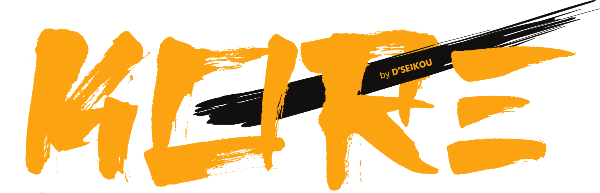

KORÉ by D'SEIKOU — Handcrafted luxury goods made with intention
Every piece starts in the quiet space between imagination and creation. Born from a simple, grounding philosophy: This, your vision, made for you to last.

Made with intention. Made by hand. Made for you by D'SEIKOU.
Designed to be lived with, loved, and passed down.
Because some things aren't meant to be replaced. They're meant to be inherited.
About KORÉ by D'SEIKOU
KORÉ by D'SEIKOU is a South African luxury brand creating handcrafted objects made with intention. Every piece begins in the quiet space between imagination and creation, and is made by hand — not mass-produced, not rushed, not replaced.
The brand was founded on a simple, grounding philosophy: some things aren't meant to be replaced. They're meant to be inherited. KORÉ pieces are designed to be lived with, loved, and passed down — objects that gain meaning over time rather than lose value.
Our first collection is currently in development. Join the waitlist for early access, behind-the-scenes updates, and first notification when the collection launches.
Frequently asked questions
What is KORÉ by D'SEIKOU?
KORÉ by D'SEIKOU is a handcrafted luxury goods brand. Every piece is made by hand with intention, and designed to be lived with, loved, and passed down rather than replaced.
What does KORÉ by D'SEIKOU make?
KORÉ by D'SEIKOU creates handcrafted, intentional objects designed for long-term use and inheritance. The first collection is currently in development.
When will KORÉ by D'SEIKOU launch?
KORÉ by D'SEIKOU is launching its first collection soon. Join the waitlist for early access and first notification.
Where is KORÉ by D'SEIKOU based?
KORÉ by D'SEIKOU is based in South Africa and ships worldwide.